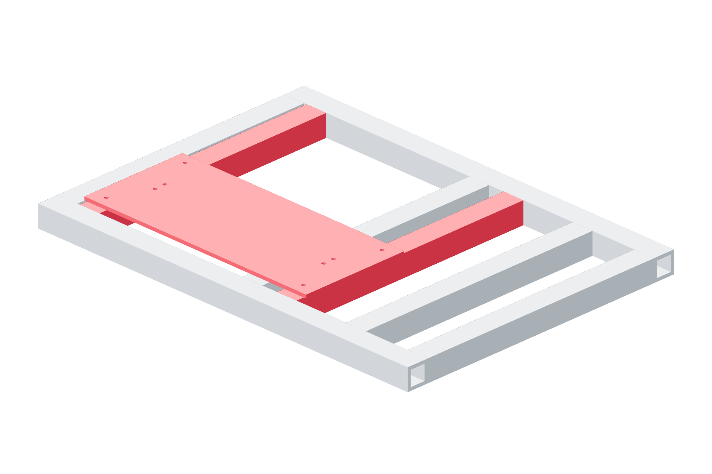

Structure / X61 / 179
Install the X bed
The 450 × 199 mm plate sits flat on the station. Its long direction is the X screw direction.
Add1 x-bed · metal plate-to-4040 fasteners
Tools / setup4 / 6 mm hex · square

- Orient the named fabrication face upward and match its location to the station CAD.
- Start every mounting screw with a washer before seating any screw.
- Seat the plate against the metal supports in opposite pairs. Keep it flat; do not pull a bowed plate down with bolt force.
Ready when
The plate rests on its metal supports without a gap and its long edge is square to the station transverse members. A cocked or bent bed twists both rails. Re-seat or correct the metal supports before rail installation.